INPUT
두 종류의 HPO 지식
hp.owl: 표현형 개념과 계층phenotype.hpoa: 질병–표현형 주석- 표준 ID로 서로 다른 형식을 연결
Knowledge Graphs & LLMs in Action · Chapter 03
원본 §3.1–§3.5를 따라가는 HPO 구축·질의·추론
3장은 온톨로지 설명이 아니라 실제 HPO 지식 그래프를 완성하는 한 사이클입니다.
INPUT
hp.owl: 표현형 개념과 계층phenotype.hpoa: 질병–표현형 주석OUTPUT
핵심 — 그래프의 가치는 연결 개수가 아니라 연결의 의미와 근거를 다시 설명할 수 있는 데 있습니다.
각 절의 문제와 산출물이 다음 절의 입력이 되는 연결을 봅니다.
보충은 마지막 — 원본 §3.5까지 끝낸 뒤에만 재실행 차이와 임상 안전 경계를 덧붙입니다.
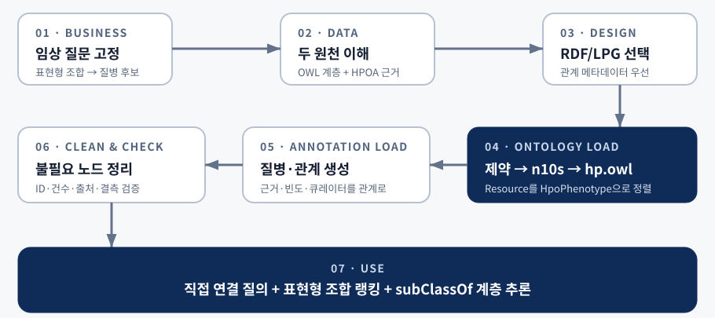
교재 그림 3.1 · 장 전체의 구체적 구축 경로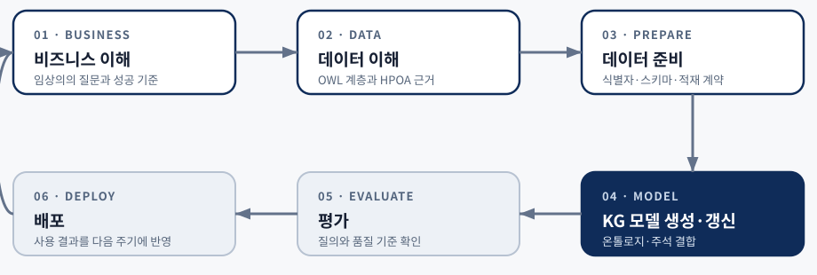
교재 그림 3.2 · 반복 가능한 CRISP-DM 순환교재 §3.1 · §3.1.1 · §3.1.2
임상의의 질문과 HPO 두 원천을 그래프 계약으로 바꾼다
01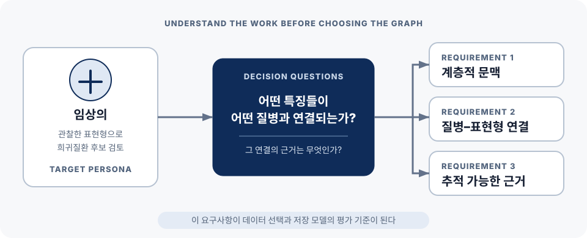
교재 그림 3.3 · 사용자 업무와 요구사항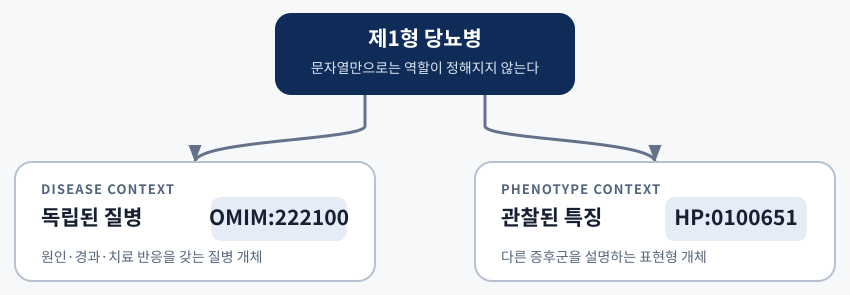
교재 그림 3.4 · 같은 이름의 두 문맥 ID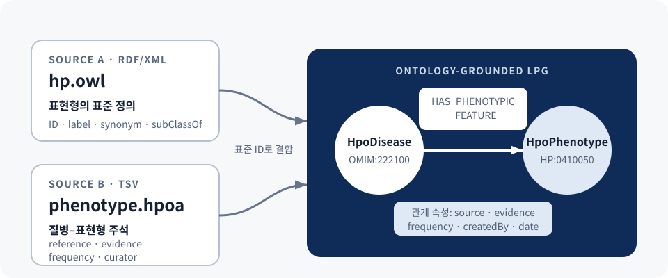
hp.owl: ID·이름·정의·동의어·계층phenotype.hpoa: 질병 연관·출처·증거·큐레이션HP:... 표준 ID가 결합 키OWL 한 개념과 HPOA 한 행이 그래프에서 무엇이 되는지 대비합니다.
Listing 3.1–3.3 · OWL
owl:Class가 표현형 개념rdfs:subClassOf가 상·하위 관계rdflib로 주어별 문장을 탐색Listing 3.4 · HPOA
데이터 이해의 결과 — 노드는 OWL에서, 관계와 provenance는 HPOA에서 온다는 입력 계약이 생깁니다.
교재 §3.2 · §3.2.1 · §3.2.2
관계 하나의 출처·작성자·날짜를 어떻게 표현하고 조회할지 선택한다
02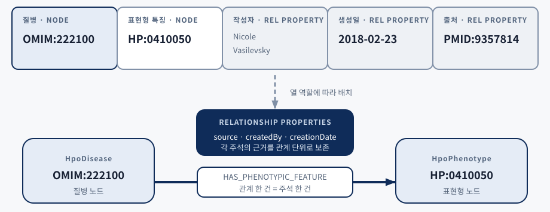
표현 예제와 조회 예제가 한 쌍씩 이어진다는 것이 이 소절의 구조입니다.
Annotation 노드를 만들고 질병·표현형·근거를 연결한다.
트리플 묶음에 이름을 붙이고 그 이름에 provenance를 단다.
트리플 자체를 인용해 메타데이터의 주어로 삼는다.
관계가 직접 키–값 속성을 가지고 Cypher에서 바로 반환된다.
이 장의 선택 — HPO의 표준 의미는 RDF/OWL에서 받아오되, 애플리케이션 저장 모델은 관계 속성을 직접 다루는 LPG로 정합니다.
교재 §3.3 · §3.3.1 · §3.3.2
개념·계층을 먼저 만들고, 질병–표현형 주장을 근거와 함께 연결한다
03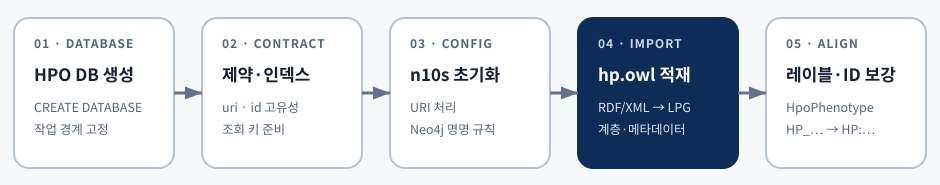
적재 성공보다 이후 질의가 어떤 이름을 기대하게 되는지 이해해야 합니다.
// Listing 3.15 · Neo4j 이름 규칙 CALL n10s.graphconfig.init(); CALL n10s.graphconfig.set({handleVocabUris: "IGNORE"}); CALL n10s.graphconfig.set({applyNeo4jNaming: true}); // Listing 3.16 · OWL 적재 CALL n10s.rdf.import.fetch( "http://purl.obolibrary.org/obo/hp.owl", "RDF/XML" ); // Listing 3.17 · URI를 HP:... ID로 SET n:HpoPhenotype, n.id = coalesce(n.id, replace(apoc.text.replace(n.uri,'(.*)obo/',''), '_', ':'))
계약의 결과
.../HP_0410050HP:0410050applyNeo4jNaming 때문에 SUBCLASSOF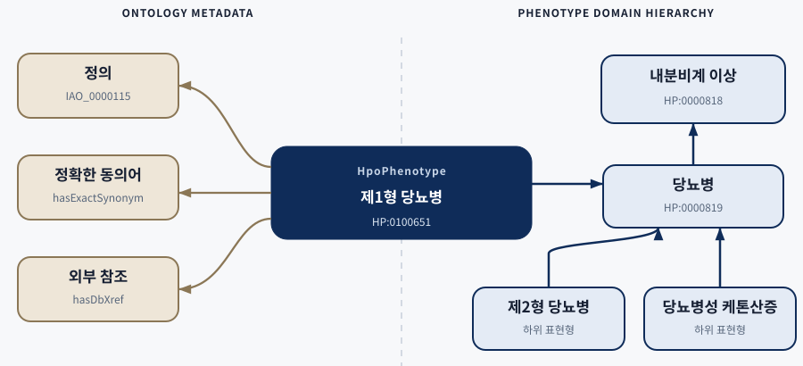
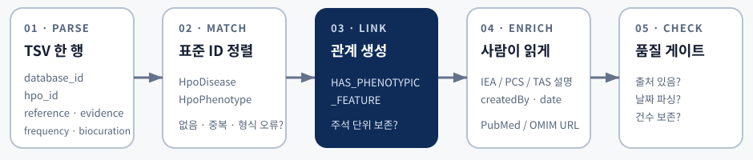
주석의 원본 필드와 파생 설명을 함께 보존해야 역추적할 수 있습니다.
source·evidence·frequency 등 값이 있을 때만 관계를 갱신한다.
큐레이터·날짜를 파싱하고 IEA·PCS·TAS 약어를 설명으로 바꾼다.
파생 속성이 원본 필드를 대체하지 않게 둘을 함께 남긴다.
보조 노드 삭제 전 건수·백업을 남기고 중간 질의의 전제를 확인한다.
주의 — 동일 질병–표현형 쌍에 여러 근거가 있으면 단순 MERGE가 주석을 합치지 않는지 별도로 검증해야 합니다.
교재 §3.4 · QUERY
알려진 질병의 표현형을 확인하고 새 관찰 조합으로 후보를 찾는다
04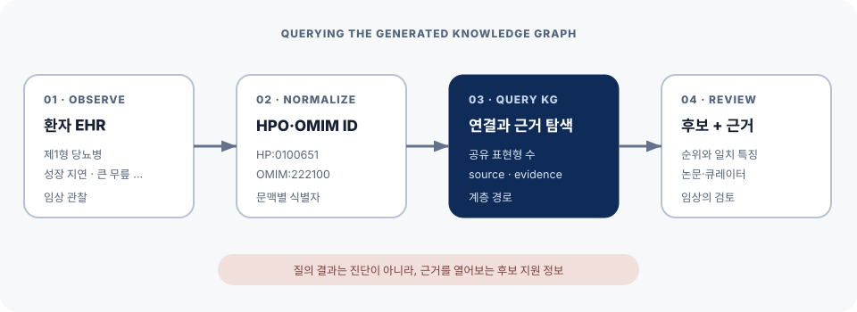
교재 그림 3.10 · 질의 단계의 전체 흐름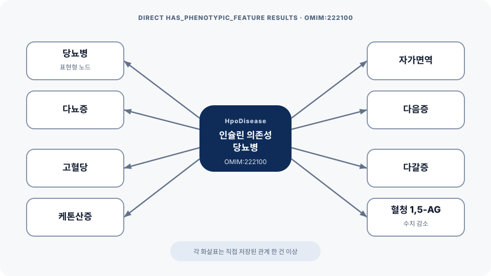
교재 그림 3.11 · 직접 연결 질의의 결과교재 표 3.2에서 다섯 특징이 모두 일치한 후보가 맨 위에 옵니다.
MATCH (phe:HpoPhenotype)
WHERE phe.label IN [
"Growth delay", "Large knee",
"Sensorineural hearing impairment",
"Pruritus", "Type I diabetes mellitus"
]
WITH phe
MATCH (dis:HpoDisease)
-[rel:HAS_PHENOTYPIC_FEATURE]->(phe)
RETURN dis.id, dis.label,
collect(phe.label) AS features,
count(*) AS num_of_features
ORDER BY num_of_features DESC, dis.label
LIMIT 5OMIM:619269
Odontochondrodysplasia 2 with hearing loss and diabetesOMIM:618500
Holoprosencephaly 12 with or without pancreatic agenesis세 후보 동률
교재 표 3.2의 나머지 세 질병연습문제 — Exercise 3.4-1은 rel의 evidence·source·url까지 반환해 같은 일치 수의 근거 차이를 보게 합니다.
교재 §3.5 · REASONING
직접 주석과 HPO 하위 클래스 경로를 함께 읽는다
05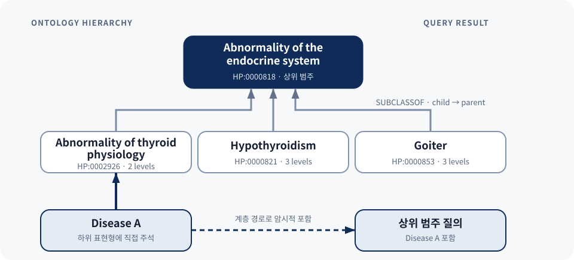
SUBCLASSOF*1..3 하위 개념 탐색Listing 3.28: n10s 범주 추론으로 질병 포함표 3.3: 직접·추론 표현형을 함께 확인더 넓은 결과가 자동으로 더 정확한 결과는 아닙니다.
| 관점 | 직접 주석 | 계층 추론 | 결과에 남길 것 |
|---|---|---|---|
| 근거 | HPOA에 명시된 질병–표현형 관계 | 하위 개념과 상위 범주의 경로 | direct / inferred 구분 |
| 가치 | 정확한 provenance 검토 | 구체적인 표현형 때문에 숨은 후보 회수 | 원 주석과 전체 경로 |
| 경계 | 상위 의미를 놓칠 수 있음 | 깊이와 온톨로지 버전에 따라 결과 변동 | 릴리스·깊이·관계 방향 |
| 해석 | 명시된 사실 | 규칙으로 포함된 사실 | 후보이지 진단이 아님 |
설명 가능성 — 어떤 하위 표현형과 어떤 계층 경로 때문에 후보가 포함됐는지 보여줘야 합니다.
AIML Quant 보충 A · REPRODUCTION & SAFETY
여기부터는 교재 §3.5 이후에 덧붙인 재실행·운영 보충이다
A교재의 2025년 2월 결과와 2026년 재실행 결과를 섞어 읽지 않습니다.
교재 OWL 적재 문장
Neo4j 5.20 · 2025-02 HPO
재실행 OWL 적재 문장
Neo4j 5.26.28 · 2026 조건
Listing 3.26 후보
하위 순위와 일부 계층은 변동
재현 계약 — HPO/HPOA 릴리스, 체크섬, Neo4j·n10s·APOC 버전, 실행 단계와 질의 버전을 함께 기록합니다.
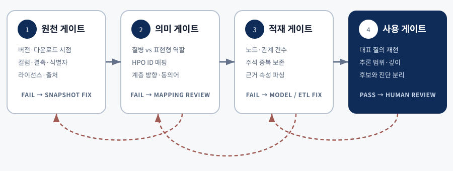
이 장은 HPO 데이터로 질의와 추론을 학습하는 개념 증명입니다.
공유 특징과 계층 경로로 추가 검토 순서를 만든다.
부정 표현형, 발현 시점, 환자군별 빈도는 단순 집계에 없다.
동의·권한·비식별화·규제와 책임 배분은 별도 문제다.
원 주석·추론 경로·릴리스와 함께 임상의에게 넘긴다.
원본의 각 절에서 다음 절로 넘어가는 이유를 설명해 봅시다.
§3.1에서 hp.owl과 phenotype.hpoa의 책임은 어떻게 다른가?
§3.2에서 LPG를 선택한 요구사항은 무엇인가?
§3.3에서 OWL과 TSV가 실제로 만나는 키는 무엇인가?
§3.4의 일치 수가 진단 확률이 아닌 이유는 무엇인가?
§3.5의 추론 결과를 설명하려면 어떤 경로와 버전을 남겨야 하는가?
THREE TAKEAWAYS
임상의가 확인할 후보와 근거에서 노드·관계·속성을 도출합니다.
OWL의 개념 계층과 HPOA의 주석을 같은 HPO ID로 결합합니다.
원 주석·계층 경로·릴리스를 남기고 최종 판단은 사람에게 둡니다.
Q&A